The original, as published: Wikibooks contributors, Control Systems, Block diagrams. CC BY-SA 4.0, https://creativecommons.org/licenses/by-sa/4.0/. Imported as published, from https://en.wikibooks.org/wiki/Control_Systems/Block_Diagrams https://en.wikibooks.org/wiki/Control_Systems/Block_Diagrams
When designing or analyzing a system, often it is useful to model the system graphically. Block Diagrams are a useful and simple method for analyzing a system graphically. A "block" looks on paper exactly what it means:
When two or more systems are in series, they can be combined into a single representative system, with a transfer function that is the product of the individual systems.
If we have two systems, f(t) and g(t), we can put them in series with one another so that the output of system f(t) is the input to system g(t). Now, we can analyze them depending on whether we are using our classical or modern methods.
If we define the output of the first system as h(t), we can define h(t) as:
Now, we can define the system output y(t) in terms of h(t) as:
We can expand h(t):
But, since convolution is associative, we can re-write this as:
Our system can be simplified therefore as such:
If two or more systems are in series with one another, the total transfer function of the series is the product of all the individual system transfer functions.
In the time-domain we know that:
But, in the frequency domain we know that convolution becomes multiplication, so we can re-write this as:
We can represent our system in the frequency domain as:
If we have two systems in series (say system F and system G), where the output of F is the input to system G, we can write out the state-space equations for each individual system.
System 1:
System 2:
And we can write substitute these equations together form the complete response of system H, that has input u, and output yG:
[Series state equation]
[Series output equation]
Blocks may not be placed in parallel without the use of an adder. Blocks connected by an adder as shown above have a total transfer function of:
Since the Laplace transform is linear, we can easily transfer this to the time domain by converting the multiplication to convolution:
The state-space equations, with non-zero A, B, C, and D matrices conceptually model the following system:
In this image, the strange-looking block in the center is either an integrator or an ideal delay, and can be represented in the transfer domain as:
Depending on the time characteristics of the system. If we only consider continuous-time systems, we can replace the funny block in the center with an integrator:
The state space model of the above system, if A, B, C, and D are transfer functions A(s), B(s), C(s) and D(s) of the individual subsystems, and if U(s) and Y(s) represent a single input and output, can be written as follows:
We will explain how we got this result, and how we deal with feedforward and feedback loop structures in the next chapter.
Some systems may have dedicated summation or multiplication devices, that automatically add or multiply the transfer functions of multiple systems together
Block diagrams can be systematically simplified. Note that this table is from Schaum's Outline: Feedback and Controls Systems by DiStefano et al
| Transformation | Equation | Block Diagram | Equivalent Block Diagram | |
|---|---|---|---|---|
| 1 | Cascaded Blocks | 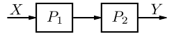 | ||
| 2 | Combining Blocks in Parallel | 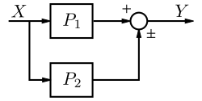 | 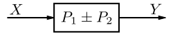 | |
| 3 | Removing a Block from a Forward Loop | 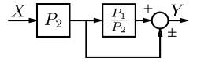 | ||
| 4 | Eliminating a Feedback Loop | 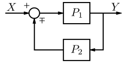 | 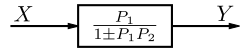 | |
| 5 | Removing a Block from a Feedback Loop | 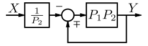 | ||
| 6 | Rearranging Summing Junctions | |||
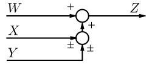 | ||||
| 7 | Moving a Summing Junction in front of a Block | 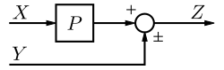 | 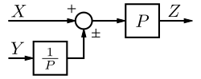 | |
| 8 | Moving a Summing Junction beyond a Block | 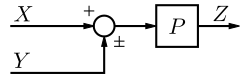 | ||
| 9 | Moving a Takeoff Point in front of a Block | 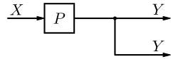 | 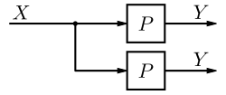 | |
| 10 | Moving a Takeoff Point beyond a Block | 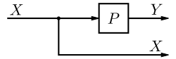 | 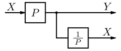 | |
| 11 | Moving a Takeoff Point in front of a Summing Junction | 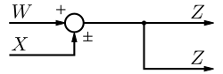 | 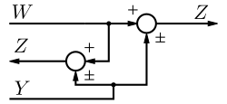 | |
| 12 | Moving a Takeoff Point beyond a Summing Junction | 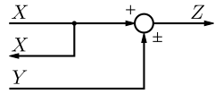 | 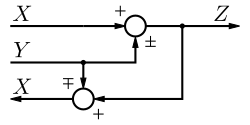 | |